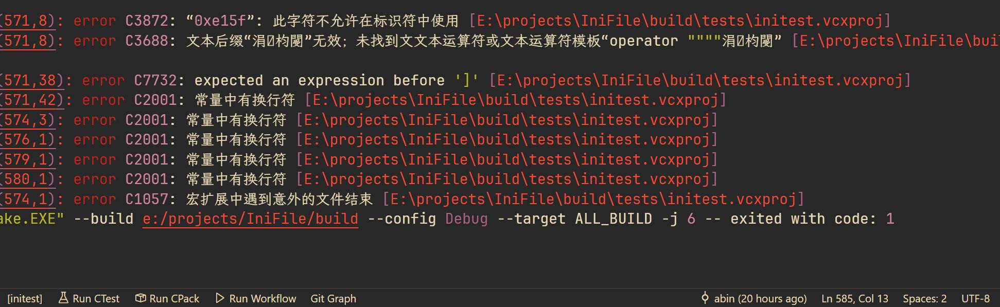

中文字符串在msvc编译器下出现异常报错
我在写中文单元测试用例,有以下cpp代码：
|
|
遇到的问题:
-
这段代码本身其实没啥问题, 在linux下使用gcc和clang都可以通过编译, 但是在msvc编译器下就有以下的编译错误:

问题原因:
问题的根本原因是 Windows 下的 MSVC 默认使用本地系统代码页（例如 GBK/936）读取源代码文件，而不是 UTF-8，而你写的源代码中含有中文字符（UTF-8 编码）。MSVC 在不知情的情况下用本地代码页解释 UTF-8 内容，就会：
- 错误地将 UTF-8 字节当作 GBK 解析，导致中文乱码
- 某些 UTF-8 字节组合不合法，会被当成非法字符或换行符处理
- 这些非法字符一旦出现在字符串、宏、甚至标识符中，就会引发各种报错
为什么 Linux 和 GCC/Clang 没问题？
GCC 和 Clang 默认就是按 UTF-8 读取源代码文件，尤其是在 UTF-8 环境下（比如大多数 Linux 系统）。所以它们不会把 UTF-8 中的合法字符误解为非法字符或乱码，自然不会出错。
解决方案
核心点: 只需要让msvc能按正确的encoding读取源文件即可.
方式1: 明确告诉msvc，使用 UTF-8 读取编译源文件, 使用编译参数/utf-8, 比如在cmake中可以添加一下内容:
|
|
这行代码会为 MSVC 编译器添加 /utf-8 选项，指示 MSVC 使用 UTF-8 编码来读取和处理源文件中的字符。
方式2: 将源码文件转为UTF-8 with BOM, vscode和notepad++都可以转换, 转换后就能成功识别并按照utf-8解析源文件.(Windows真是够无语的, 不带BOM的UTF-8不识别)
最推荐的解决方案：
- 确保所有源代码文件保存为 UTF-8 编码（无 BOM）。
- 在
CMakeLists.txt中添加add_compile_options("/utf-8")，告诉 MSVC 使用 UTF-8 编码。 - 如果你使用 Visual Studio，设置默认保存为 UTF-8。
tips：这个问题困扰我很多年了，一直没搞明白，所以简单记录下(或许也是我太菜了🙈)